Lasse Schlör
lasse-schloer@unibo.it
MMM General Assembly
2026-04-13
Lasse Schlör
lasse-schloer@unibo.it
MMM General Assembly
2026-04-13
Open Source means:
Examples:
Antonyms:
The Free Software Foundation defines four essential freedoms:
“Free” not as in “free beer”, but as in “free speech”.
| Company sells | Example |
|---|---|
| Support and consulting | Red Hat |
| Hosted service | WordPress.com |
| Advanced features | GitLab |
| Dual licensing | MySQL |
| Custom development | Collabora |
| Long-term maintenance | Canonical |
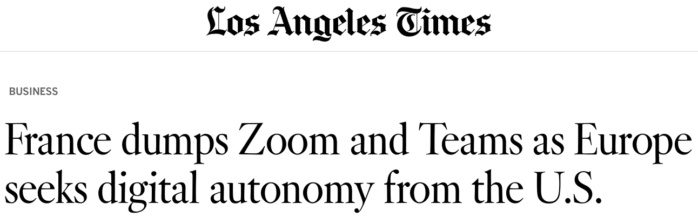
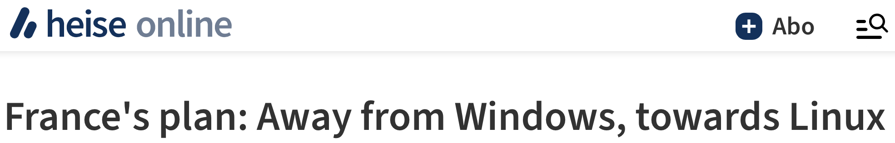
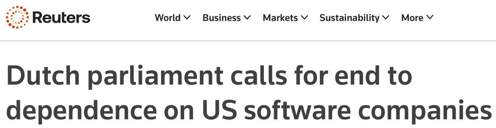
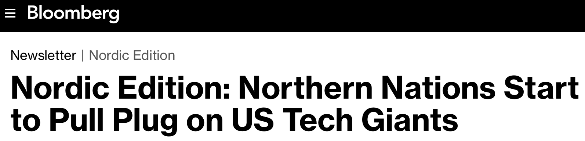
Examples of vendor lock-in:
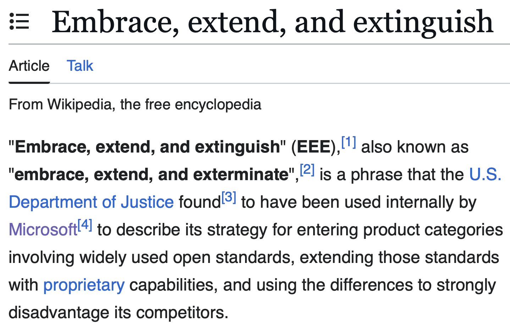
Examples of anti-repair design:
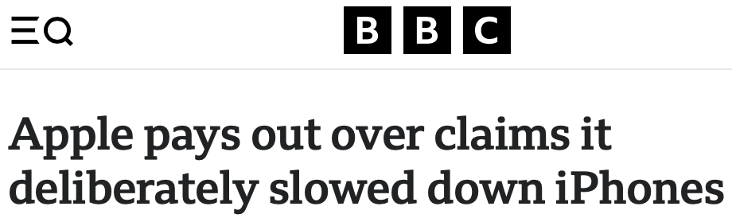
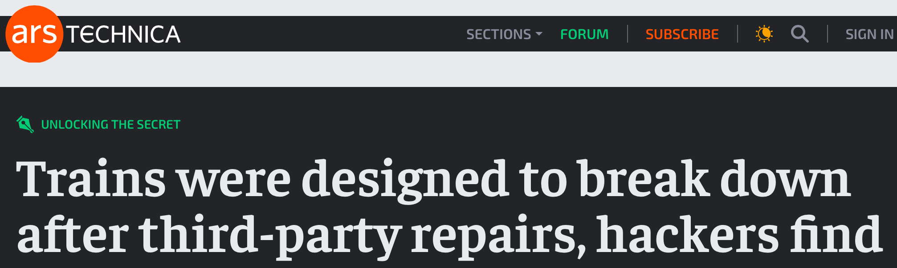
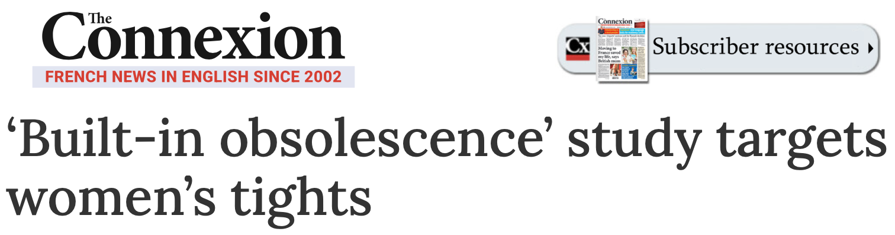
“We love our phones, but we do not trust them. And love without trust is the definition of an abusive relationship.”
— Maria Farrell
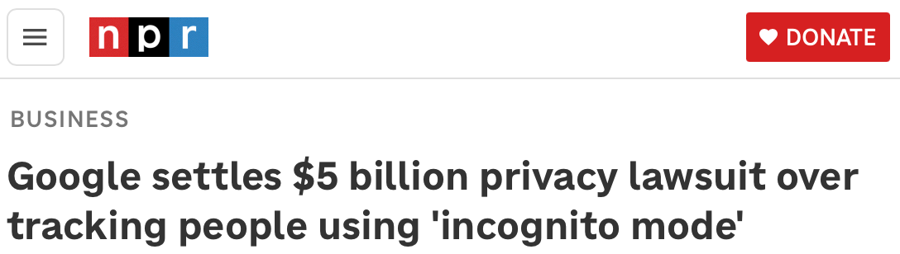
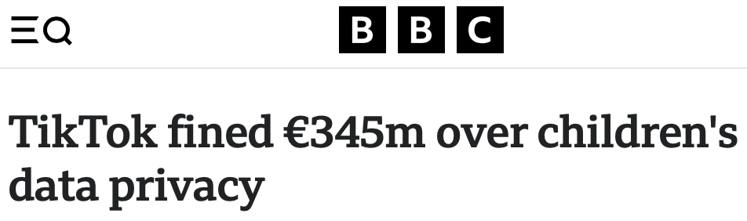
“Further, science is a collaborative effort. The combined results of several people working together is often much more effective than could be that of an individual scientist working alone.”
— John Bardeen, Nobel banquet speech
“More than 70% of researchers have tried and failed to reproduce another scientist's experiments, and more than half have failed to reproduce their own experiments.”
— Monya Baker, Nature
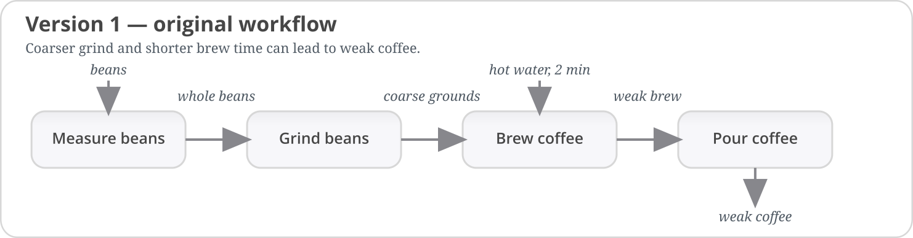
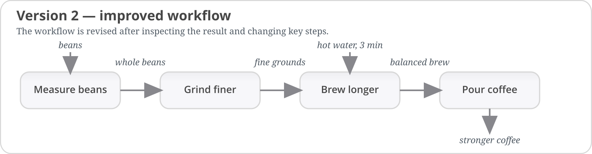
Future-proofing:
| ID | RES | VALUE | NEW_VALUE | FLAG | __ETA__ |
|---|---|---|---|---|---|
| 001 | Y | N.A. | 64 | 0.1 | |
| 002 | Y | 12.4 | 12.8 | 64 | 0.1 |
| 003 | N | 13.1 | 13.4 | 96 | 0.1 |
| filename | used_for_analysis |
|---|---|
| results.csv | no |
| results_v2.csv | no |
| results_final.csv | FALSE |
| results_final2.csv | no |
| results_reallyfinal.csv | maybe |
# nobody knows what this does
# Bob wrote this in 2019
# ask him if you can find him
def do_it(x):
y = []
# loop over input
for i, z in enumerate(x):
# calculate result
y += [h(q(z), y[-1:] or y)]
return y
 tracks changes to files over time:
tracks changes to files over time:
| 1. |
Dependency snapshots Freeze package/library versions conda, renv, requirements.txt, … |
|---|---|
| 2. |
Containers Freeze the software environment Docker, Apptainer/Singularity, … |
| 3. |
System snapshots Freeze the whole system (if containers aren't an option) GNU Guix, NixOS, … |
| 4. |
Workflow managers Freeze the full workflow Nextflow, Snakemake, … |
This presentation is open source. Its source code can be found at:
https://github.com/publik-void/publik-void.github.io